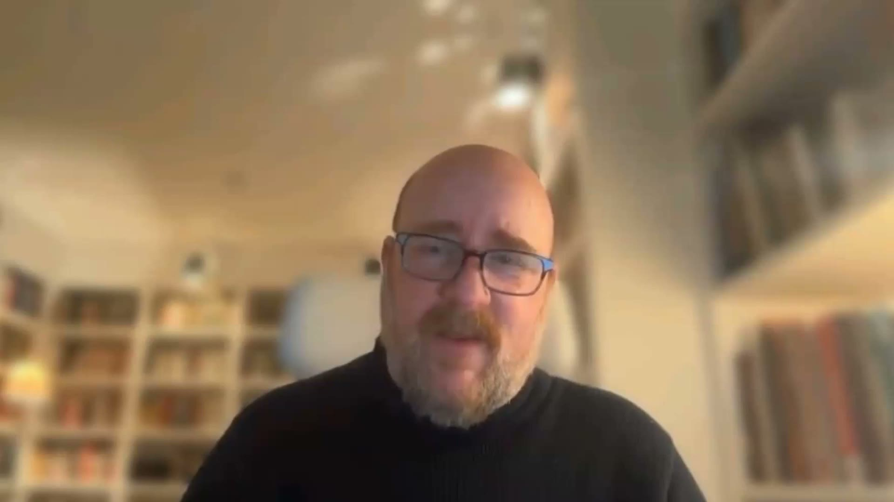

AIS
LIVE
YOU JUST SPENT THE WEEKEND BUILDING
You learned to
build.
Here's how you get
paid.
The free community teaches you to
build.
AIS
+
teaches you to
earn.
INSIDE AIS+ · 6 MODULES
1
Start Here
Get onboarded into the community.
2
The AI Partner Model
The exact model to grow an agency to 7 figures.
3
Build Your Portfolio
Foundations of AI + step-by-step Claude Code.
4
Claude Code
Turn ideas into working AI systems, faster.
5
Get Your First Clients
A step-by-step path to your first paying clients.
6
Scale
Scale your AI automation agency to 7 figures.
WHAT YOU UNLOCK
✓
Live coaching calls with Nate
✓
A community that's actively earning
✓
Templates, pricing calculator, 90-day planner
Your skills are worth
$1K–$10K+
per client.
One client pays for
AIS
+
many times over.
Join
AIS
+
Become a member →
REAL MEMBERS · REAL NUMBERS
GLENN MARCUS · AIS MEMBER
$0K
FIRST CONTRACT · 5 DAYS IN
